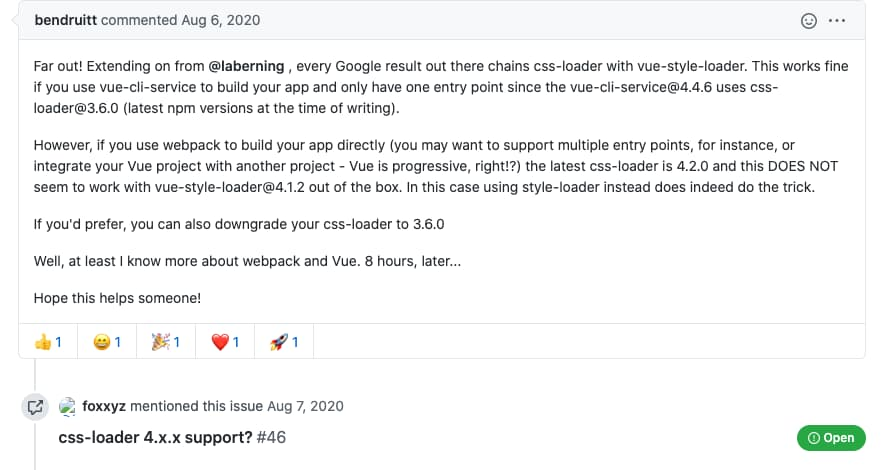

webpack4配置vue-style-loader出现css没有加载的异常
在使用webpack4配置vue脚手架时，按官方的教程，使用webpack-dev-server运行，出现了单文件组件的css没有生效的问题。
vue-loader官方给出的配置是：
1 | // vue-loader官方教程 |
后将处理css的loader改为style-laoder后正常：
1 | { |
查询vue-style-loadergithub上issue发现是css-loader 4.x与vue-style-loader 4.x不匹配：

意思是：
- 如果想使用
css-loader4.x则不能使用vue-style-loader，要用style-loader; - 如果想使用
vue-style-loader,则要将css-loader改为3.6.0版本； vue-cli-service@4.4.6使用了css-loader@3.6.0